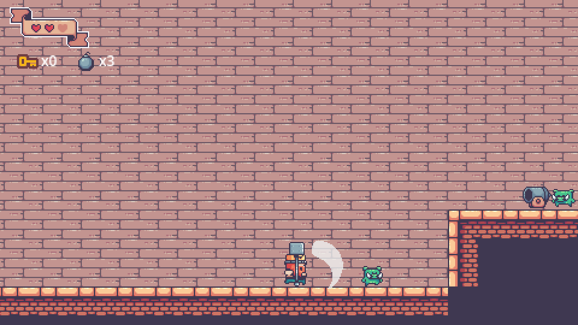

GameDev 2D · C1
GameDev 2D · C1

A trilha em oito portas
Objetivo: saber o que você vai construir e onde cada módulo entra.
Cada módulo tem 16 horas, de sábado a sábado, e três sites como este:
| Momento | Carga | O que acontece |
|---|---|---|
| Aula inicial (sábado) | 4h presenciais | O instrutor explica o tema e vocês reconstroem juntos uma parte do jogo modelo. |
| EAD (durante a semana) | 8h | Fundamentação teórica com material externo e a atividade que leva o tema para o seu jogo — o marco do módulo. |
| Aula final (sábado) | 4h presenciais | Complemento do tema, entregas, playtest entre colegas e encerramento do módulo. |
 C1GDD ◂ vocêP1/V1ArteP2/V2AnimaçãoP3/V3FaseC2EngineC3MecânicasC4ÁudioC5Publicação
C1GDD ◂ vocêP1/V1ArteP2/V2AnimaçãoP3/V3FaseC2EngineC3MecânicasC4ÁudioC5PublicaçãoOs módulos 2, 3 e 4 têm duas versões: Pixel Art (P) ou Arte Vetorial (V). Do 5 em diante o código é o mesmo para todos. No último módulo, o seu jogo vai para o itch.io com um link que você pode pôr no currículo.
Jogue como designer
Objetivo: jogar o modelo do começo ao fim, anotando o que acontece em vez de só tentar vencer.
Abra O Rei e os Porcos no navegador (o carregamento leva alguns segundos) e jogue até vencer ou perder. Se aparecer “Failed to fetch”, o site foi aberto direto do computador (endereço começando com C:/ ou file://): abra pelo endereço publicado rclepf.github.io/GameDev2D-C1-01/jogar/. Controles: A/D andar, Espaço pular, J martelo, K bomba, E interagir, Esc pausa.
Agora jogue com um papel ao lado e anote, por fase:
- O que o jogo me ensinou e como (texto? fase? perigo?)
- O que eu repeti o tempo todo
- Onde eu morri ou travei, e por quê
- O que mudou de uma fase para a outra

Os elementos formais
Objetivo: descrever qualquer jogo com as mesmas oito perguntas.
Todo jogo, de xadrez a plataforma, pode ser descrito por oito elementos (Tracy Fullerton, Game Design Workshop). Preencha a última coluna com o jogo modelo — duas linhas já vêm de exemplo.
| Elemento | A pergunta | No castelo |
|---|---|---|
| Jogadores | Quantos e em que papel? | 1 jogador, no papel do rei. |
| Objetivo | O que é vencer? | você preenche |
| Procedimentos | Que ações o jogador pode fazer? | Andar, pular, martelar, arremessar bomba e interagir com portas e baús. |
| Regras | O que é permitido, proibido, o que acontece quando…? | você preenche (dica: quem fere quem?) |
| Recursos | O que o jogador tem e gasta? | você preenche (olhe a HUD) |
| Conflito | O que impede o objetivo? | você preenche |
| Limites | Onde o jogo acontece? | você preenche |
| Resultado | Como termina? | você preenche |
MDA: da regra à sensação
Objetivo: ligar o que está programado ao que o jogador sente.
O modelo MDA (Hunicke, LeBlanc e Zubek) separa o jogo em três camadas. O designer constrói de dentro para fora; o jogador percebe de fora para dentro.
| Camada | O que é | Exemplo no castelo |
|---|---|---|
| Mecânica | As regras e ações, como estão no código. | A bomba explode 1,6 s depois de arremessada e fere tudo num raio. |
| Dinâmica | O comportamento que surge quando o jogador usa as mecânicas. | O jogador aprende a jogar a bomba antes do chefão chegar e se afastar. |
| Estética | A emoção que o jogador sente. | Tensão e alívio: “consegui no tempo certo”. |
Escolha outra mecânica do castelo — o canhão, a caixa com porco escondido ou a chave — e escreva a sua linha M → D → E.
O loop central
Objetivo: achar a sequência de ações que o jogador repete do início ao fim.
O loop central é o ciclo que o jogador repete minuto a minuto. Se ele não for bom sozinho, nenhuma arte salva o jogo. Ele se escreve em uma frase com verbos.
Exemplo de outro jogo: em Celeste, “pular, agarrar e dar dash para atravessar uma tela → a tela seguinte é mais difícil”.
Use as suas anotações da Sala 02. Quantos verbos aparecem em toda fase? Qual é a recompensa que puxa para a próxima sala?
Loops secundários
Ao redor do loop central giram ciclos maiores: na escala da fase (achar a chave → abrir a porta) e na escala do jogo (três salas cada vez mais perigosas → chefão). Anote os dois.
O GDD de uma página
Objetivo: conhecer o documento que você vai escrever duas vezes neste módulo.
GDDs de cem páginas ninguém lê. O de uma página cabe na parede e responde ao que a equipe precisa saber para produzir. Este é o modelo da trilha:
| Campo | O que escrever |
|---|---|
| Título e frase de venda | Nome + uma frase que faria alguém querer jogar. |
| Público e plataforma | Para quem, em que idade, onde joga (PC, navegador). |
| Gênero e referências | Gênero + 2 jogos parecidos e o que você pega de cada. |
| Loop central | A frase da Sala 05. |
| Controles | Ação → tecla. |
| Personagem e inimigos | Herói, inimigos e o que cada um faz. |
| Progressão | Fases, o que muda entre elas, o chefão. |
| Vitória e derrota | Como ganha, como perde, o que acontece ao perder. |
| Estética | Estilo (pixel ou vetor), paleta, clima, som. |
| Lista de assets | Tudo o que precisa ser desenhado, animado ou gravado. |
Baixe o modelo: Modelo_GDD_1_Pagina.docx.
Engenharia reversa: o GDD do castelo
Objetivo: preencher o GDD de uma página do jogo modelo — Atividade C1.1.
Use as tabelas das Salas 03 a 05 e as suas anotações. Para a lista de assets, abra a pasta do pacote de artes ou conte o que aparece na tela: cada animação do rei conta como um asset.
- Os oito elementos formais do castelo preenchidos.
- Uma linha MDA escrita por você.
- O loop central do castelo em uma frase.
- O GDD de uma página do castelo, com a lista de assets.
Onde estamos na trilha
C1GDD ◂ vocêP1/V1ArteP2/V2AnimaçãoP3/V3FaseC2EngineC3MecânicasC4ÁudioC5Publicação